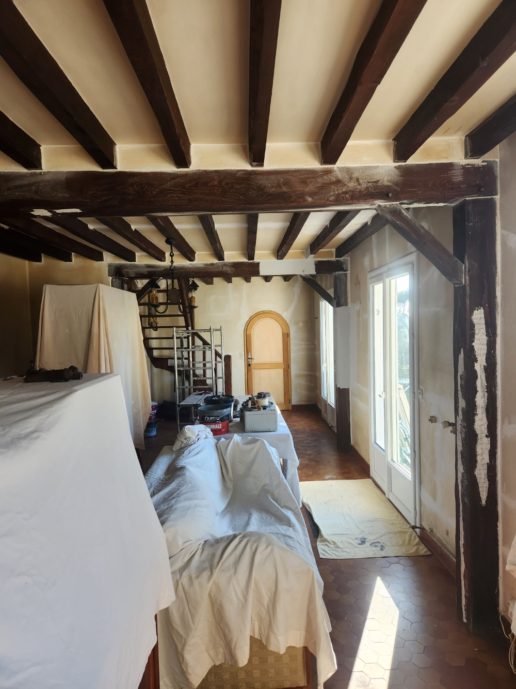
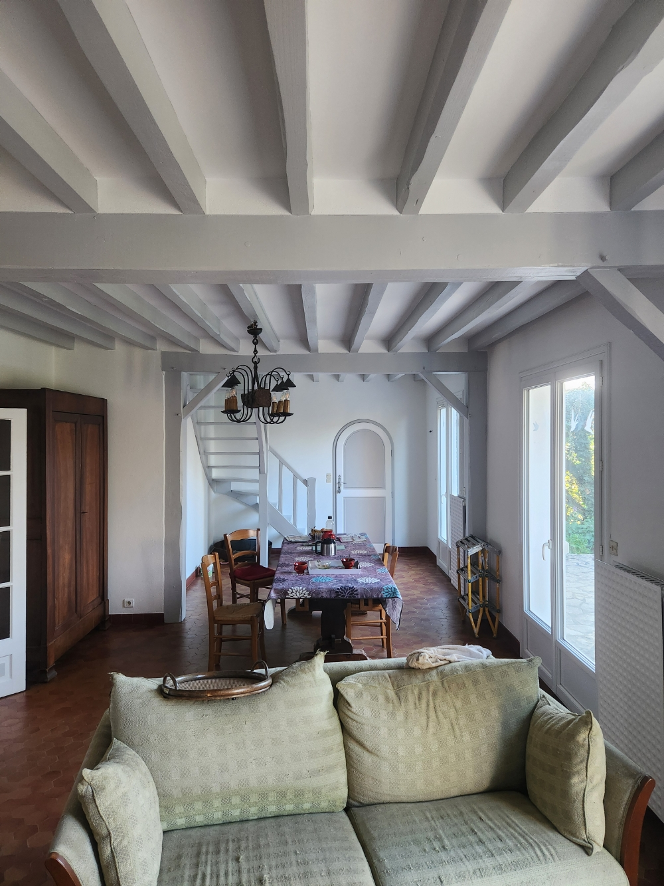

Nos réalisations de peinture dans le Loiret
Découvrez des exemples de chantiers réalisés à Montargis, Château-Renard, Ferrières-en-Gâtinais et dans tout le département 45.

Avant
AprèsRénovation salon – Poutres & murs
Peinture poutres, murs et boiseries laquées blanc satin
 Pro / Rénovation
Pro / Rénovation
Réfection magasin int. & ext. – Loiret
Peinture sol, murs intérieurs, façade et bardage métallique
 Intérieur
Intérieur
Peinture cuisine + meubles compris
Meubles rustiques relookés en blanc satin, murs et plafond
 Rénovation
Rénovation
Marches moquette escalier hélicoïdal
Réfection complète des marches, peinture ferronnerie blanche
 Intérieur
Intérieur
Réfection plafond de mezzanine
Travaux en hauteur sur échafaudage, poutres et plafond
 Toiture / Façade
Toiture / Façade
Lavage & traitement anti-mousse toiture
Nettoyage haute pression, traitement hydrofuge anti-mousse
Votre projet mérite les meilleures finitions
Demandez un devis gratuit pour vos travaux de peinture à La Selle-en-Hermoy ou dans le Loiret.